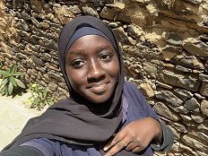

Curriculum Vitae
Aïssatou Aminata TOURE
14/06/2007
Parcelles Assainies Unité13 villa n° 506
aatmemba@gmail.com
774371107 / 707635901

FORMATION
2022 – 2023 : Seconde S
Nov. 2022 – Avr. 2023 : Formation au codage et aux TICs avec WIA et Atos (LEMBA)
Lycée d’Excellence Mariama BA
Cours d’aviation (LEMBA)
Formation pour la gestion d’ une bibliothèque(LEMBA)
2021 – 2022 : Brevet de Fin d’Etude Moyen(LEMBA)
2017 – 2018 : Certificat de Fin d’Etude Elémentaire (MIRADOR)
Concours d’entrée au (LEMBA)
COMPETENCES
Linguistiques : Wolof (langue natale), Français, Anglais, Base en Arabe
Informatique : Maitrise de python, Word, PowerPoint, Google slides, HTML, Notepad++, Vs code en informatique
Bibliothèque
Base en break dance
EXPERIENCES PROFESSIONNELLES
2023 : Gestion de la boutique scolaire (vente des produits, monnaie…)
Gestion de la bibliothèque scolaire
Fév. – 2023 : Secrétaire générale club scientifique : Organisation d’un weekend scientifique, vente de produits alimentaires comme source de revenus
2018 -2022 : Ministre de la santé (Assistance aux élèves malades, amener les élèves à l’infirmerie, récupérer les médicaments pour les élèves)
2017 -2020 : Assistante d’un professeur correction de copies, gestion des bulletins des élèves. Aminata Bakhoum 774371107
CENTRE D’INTERET
Lecture, dessin, documentaire sur les faits antiques et anciens, films sur les anciens…, football
COMPETENCES PROFESSIONNELLES
Assiduité, Déontologie du métier, ouverture d’esprit, détermination, persévérance dans le travail, rigueur, audace…
LANGUES
Première langue : Wolof
2nd langue : Français/Niveau élevé
Anglais
option : Arabe
ACTIVITES EXTRASCOLAIRES
Membre d’une association d’aide aux enfants démunis
Organisation d’évènements festifs, éducatifs, culturels (Journées culturelles, Weekend scientifique)